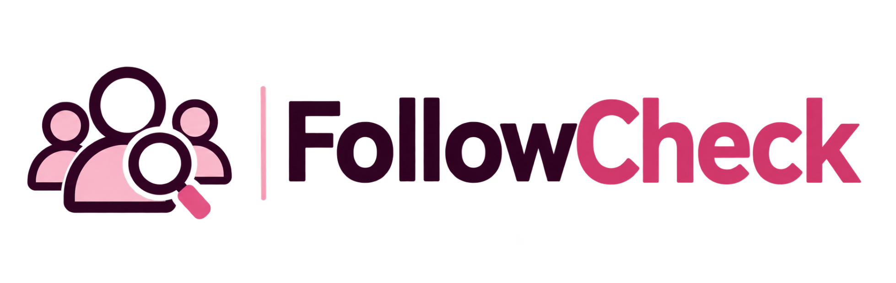

نسخة احتياطية للتقدّم
احفظ الحسابات التي علّمت عليها، واسترجعها لاحقًا أو على جهاز آخر. ملف النسخة الاحتياطية يحتوي أسماء المستخدمين.

اكتشف الحسابات اللي ما بتتابعك بالمقابل، واعرف مين بتابعك وإنت مش متابعه، ونظّم قائمة متابعاتك بسهولة وخصوصية تامة. كل التحليل بيتم على جهازك.
ابدأ التحليل ←مجاني • بدون تسجيل دخول • بياناتك ما بتغادر جهازك
نزّل بيانات المتابعين والمتابَعين من إنستغرام بصيغة JSON (الأفضل) أو HTML، وارفع الملفين هون.
اختَر جميع ملفات followers_1 وfollowers_2 إن وجدت. أدخل الأعداد الحالية للتحقق من اكتمال التصدير؛ قد تختلف عن وقت تنزيل الملفات.
كل شيء على جهازك. احتفظ بنسخة احتياطية إذا بدك تكمّل على جهاز ثاني.
احفظ الحسابات التي علّمت عليها، واسترجعها لاحقًا أو على جهاز آخر. ملف النسخة الاحتياطية يحتوي أسماء المستخدمين.
اختياري: حفظ قوائم الحسابات محليًا لتجنب رفع ملفات إنستغرام في كل زيارة. التخزين غير مضمون بعد مسح بيانات المتصفح.
مش بس مقارنة أسماء؛ FollowCheck بيساعدك تفهم قوائمك وتنظّمها بدون تعقيد.
شوف مين مش متابعك، ومين بتابعك، والمتابعات المتبادلة.
ابحث عن أي يوزر ورتّب القوائم حسب الاسم أو تاريخ المتابعة.
نزّل أسماء المستخدمين TXT أو CSV حتى ترجع إلهم بسهولة.
علّم الحسابات اللي ألغيت متابعتها، واحفظ نسخة من تقدّمك.
من إعدادات إنستغرام، اطلب تنزيل معلومات المتابعين والمتابَعين بصيغة JSON واختَر «كل الوقت». شوف الشرح المصوّر ←
افتح الملف المضغوط واختَر ملفات المتابعين والمتابَعين. ما بنطلب كلمة سر أو تسجيل دخول.
شوف النتائج، ابحث عن أي حساب، ونزّل قائمة اليوزرات. وإذا بلّشت تنظّم متابعاتك، احفظ تقدّمك.
شرح مصوّر خطوة بخطوة. اسحب الصورة يمين أو يسار على تلفونك، أو استخدم أزرار التنقّل.
اسحب للتنقّل · اضغط الصورة للتكبير
ملاحظة: واجهة إنستغرام قد تختلف حسب الجهاز والتحديث. اختار «طوال الوقت» وJSON، ولا تشارك ملف التصدير مع أي جهة غير موثوقة.
لا. بتستخدم ملفات البيانات اللي بتنزلها بنفسك من إنستغرام.
نعم. الموقع بيشتغل من متصفح التلفون أو الكمبيوتر، وبتقدر تختار ملفات JSON من جهازك.
مش من ملف واحد. النتائج بتقارن المتابعين والمتابَعين وقت تصدير البيانات، وما بتثبت متى صار إلغاء المتابعة.
العلامات بتضل محفوظة محليًا على نفس المتصفح ما دمت ما مسحت بياناته. وللنقل بين الأجهزة استخدم تنزيل واسترجاع نسخة التقدّم.
الملفات تُقرأ وتُحلّل داخل متصفحك باستخدام JavaScript، ولا يتم إرسال محتوياتها إلى خادم. لا نطلب كلمة مرور ولا نتصل بحساب إنستغرام. إغلاق الصفحة أو مسح النتائج يزيل القوائم من واجهة التطبيق، لكن علامات «تم إلغاء متابعته» تُحفظ محليًا في المتصفح حتى تمسحيها بنفسك. ويمكنك اختيار حفظ قوائم التحليل في مساحة تخزين المتصفح؛ لا تُرسل البيانات إلى خادم تابع للموقع. ملفات النسخ الاحتياطية التي تنزّلها قد تحتوي أسماء حسابات، فاحفظها في مكان آمن.
تنبيه: القائمة الحالية تُظهر من لا يتابعك الآن، ولا تثبت أن شخصًا ألغى متابعتك سابقًا. هذا الموقع غير تابع لـ Instagram أو Meta.
حابب تقترح ميزة جديدة أو واجهتك مشكلة؟ تواصل معنا على صفحات ORLA.